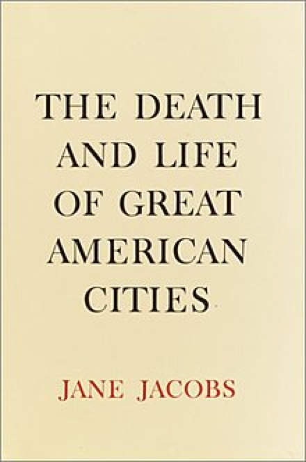

The Death and Life of Great American Cities

What is the city like? Where does the life of a city come from? What is the purpose of urban planning? Who ruined our cities? How can we save the vitality of our cities?
With her distinctive and constructive critical stance, Jane Jacobs published The Death and Life of Great American Cities in 1961.
Jane Jacobs, in particular, criticized Howard’s garden city and Le Corbusier’s radiant city theory for viewing cities as problems of simplicity or disorderly complexity and always attempting to analyze and treat urban problems in this light. In early planning theory and practice, variables in planning concepts such as population, site size, services, transportation facilities, open space, etc. were often viewed as linear, interrelated, and simple variables and placed in a closed, static system. Of course, many planning theorists and practitioners have long since discovered that this is not the case. In the 20th century, urban planning theory began to draw on the new ideas of statistics and probability theory and inadvertently went to the other extreme. It seemed that urban problems were problems of disorderly complexity and that cities could only be understood through purely statistical analysis. With this understanding and probabilistic statistical methods, a massive urban survey and a plethora of statistics and graphs to display became a possibility.Le Corbusier said, “Human happiness already exists in numbers, mathematics, calculated design, and planning, from which the city can already be seen.”
It also made it possible to sketch out city plans in the form of statistics, of which people are often still convinced. This is exactly what many of us do today with great pleasure. The new approach complements the old, but are urban problems irrational, incomprehensible, and unpredictable? They are not. Simply put, the probabilistic and statistical approach only allows us to take a “bird’s eye view” of so-called urban problems, providing a broader scope of analysis. Cities like Brasilia, built according to Le Corbusier’s theory, have proven this theory wrong. Society is spontaneous and cannot be limited by a digital “bird’s eye view” of “clarity” and “simplicity” for administrative convenience and financial orientation. “A Brasilia outside the plan in the remote areas supports the cost of order and clarity in the center of the plan.” “The two basilicas are not different; they are symbiotic.” As Jacobs puts it, the “elimination” of the favelas does not “eliminate” the favela, but simply moves it from one place to another.
Pioneering an anti-modernist theory of urbanism, Jacobs argues that “the city, like the life sciences, is a problem of ordered complexity” rather than a “problem of simplicity” or “a problem without complexity.” The elements of the city are in a situation where many variables are different but at the same time subtly interrelated. Therefore, urban problems often do not manifest themselves as a single problem, a fact that is not difficult to discover by simply observing and analyzing reality. These problems have many variables, but they are not chaotic and illogical; on the contrary, they are interrelated and form an organic whole.
In this regard, I believe that this clear distinction between residential, commercial, industrial, and CBD is already dealing with the concept of “organic whole” today, albeit with a simplified perspective that does not require the complexity of the problem. It compares the whole city to a living organism in which the districts, neighborhoods, and streets play the roles of organs, tissues, cells, and blood vessels. It cannot be said that the designers and planners of urban planning have not considered the concept of “diversity” or have not thought about the location, function, and relationship between these areas; in fact, planners are constantly improving transportation between residential and work areas (hence the freeways, large parking lots at subway stations, and massive, congested traffic jams). and huge, congested transportation hubs), but the problem never seems to be solved.
So what’s the problem? At least superficially, I think the problem lies at the level of “diversity.” A careful reading of The Death and Life of Great American Cities shows that Jacobs’ “diversity” refers to the diversity of city functions in general and to the diversity of areas, neighborhoods, and streets—the diversity of each street. It is diversity on a small scale, or, to use the term above, “within the reach of the city’s residents,” whether it is the mix of primary uses, small street segments, old buildings, appropriate densities, or the use of partitions or landmarks. Jacobs argues that “despite the inherently extroverted nature of the city’s neighborhoods, it is not the case that city dwellers can live well without them.” Even the most urbanized person must care about the atmosphere of his or her street and neighborhood, regardless of the options available outside the neighborhood; for their daily actions and lives, urbanites depend heavily on their neighborhoods. “Nothing explains why city dwellers have more in common than a common geographic location.” But if they don’t manage it well, it can become a place of failure.
The diversity of people, the diversity of their needs, and the diversity of their desires are self-evident. Therefore, the diversity of each street reflects the endogenous diversity of the demands of the “people” who live there. And this is exactly what (extreme) modernism wants to eliminate. What extreme modernism seeks to create is the city as an object, born of “man” and gradually separated from “man” in its development; its goal is to maximize the value of the city itself and its owner (the state), not the value of man.
In 1929, Le Corbusier visited South America. With the help of two pilots, he examined Rio de Janeiro from the air. For the architect, this was not just an exciting experience. The plane offered him an unprecedented perspective from high in the sky. From this vantage point, Rio de Janeiro was reduced to a linear city that stretched like a flying eave, with the vast ocean on one side and steep volcanic cliffs on the other. Corbusier excitedly sketched out the city’s plan: a concrete viaduct, about 100 meters above the ground, stretching for miles along the coast, with people living just below the towering bridge. Corbusier preferred to look down; looking down, as a transcendental perspective, is also a simplified perspective. It seems sweeping, but it is very abstract. It exalts simple lines, geometric blocks of color, and huge volumes and almost instinctively abhors complexity, confusion, and detail because these phenomena are not numerical and generalized.
Because of the “overlook,” we are not surprised to see in “City of Tomorrow” a city without “people” but only “functions;” the distant overlook completely ignores the presence of people and sees only far away. The distant view completely ignores the existence of people and only sees the city area, which is much larger than the people. However, I believe that a city is just a form of organization for human society to achieve excellent benefits through the scale effect at a certain stage of development. This “form of organization” is a collection of “people with common interests” and “a wide range of choices and abundant opportunities,” so the city should first be designed to break through the resource constraints of rural society and meet the needs of the city to a greater extent. Therefore, the city should first exist to break through the resource limitations of rural society and to better satisfy the different levels, aspects, and types of needs of urban people, from physical and safety to emotional and self-realization, and “function” is only an accessory to the process of realizing human aspirations in the city. The city should serve the “people,” not the “city” itself. But the fact is that the purpose of the city is diverted when it becomes the domain of those in power or the main source of income for the state—the “discovery of society.” Those in power, or more generally the “state,” are just as concerned with their interests as the rest of the city’s inhabitants, with the difference that they have an interest in the city. The difference is that they have absolute or relatively strong power over the city as a “common home.” They use the city as a tool to maximize their values, and the city’s inherent diversity is a natural force against their decisive intervention. This is what they want to change: “The precondition for the modern state is the assumption of the existence of a simple and coherent property regime that is clear and therefore manipulable from the top down.” Their concern is not with “urban people,” but with the “functions” (finances) of cities: “The pragmatist discourse replaces nature with natural resources.” The substitution of “natural resources” for “nature” in the pragmatists’ discourse reflects their concern with only those aspects of nature that can be useful to humans. In order to achieve such an instrumental purpose, the state must ignore those aspects of existence that do not seem important to it in order to “reduce the infinite specifics to a few types that can be described, compared, and summarized in general terms.” In other words, to achieve the interests of the state, it is necessary to extract from the complexity of nature what is important and make it clear. The most effective and convenient way to achieve this clarity is through simplification, even if it is accompanied by varying degrees of inaccuracy, inadequacy, error, falsification, oversight, and deliberate distortion. As a result, the city’s living inhabitants—its creators—become statistics and ID numbers; their diversity is erased; and workers on an assembly line perform the “functions” of the city. This suppression of the human being as the subject of the city and the artificial promotion of the city and its functions as an object make the city, like Zimmer’s concept of “subject culture” and “object culture,” separate from the “human being” that gave birth to it and become itself a “human being.” It becomes an objective existence with subjectivity. Le Corbusier’s “City of Tomorrow” is a typical example: the city seems to function without people living in it, in an empty but magnificent city. The city gradually becomes detached from “people,” from serving “people” to serving the “city” itself; the city comes from people but loses them in the process of development, from a living, breathing The city comes from people but loses them in the process of development, going from a living world to a design blueprint under the pen of planners. This is the first layer of meaning in a city without people.
Thus, the city, the “second nature,” is treated as the antithesis of “nature” or even as a “substitute for nature.” Here, “nature” is both a biological existence and a description of a complex, diverse, autonomous, and balanced social fact. Since clarity and simplicity have become how cities become cities, it is only natural that “complexity, diversity, autonomy, and balance,” which are the antithesis of clarity and simplicity, should also be dealt a fatal blow. Diversity and complexity do not reflect national interests but purely local ones. That is, they cannot be absorbed by the governing structures of the state unless they are transformed and simplified into simple expressions that are at least partially fictional. If we say that the city emerges as a natural collection of people, a “nature,” and if we recognize that the human quest for diversity of needs is also a “nature,” then when the city is separated from the If we admit that the quest for diversity of human needs is also a “nature,” when the city becomes an objective existence apart from “people,” it becomes a weapon against nature, against “complexity, diversity, autonomy, and balance. But the real object of this confrontation is man himself: the city against man in the city, the “city with its subjectivity” against the “city of nature,” the “city of objects,” the “constructed city.” The “city with its own subjectivity” is opposed to the “natural city,” the “object city,” and the “constructed city.” As noted above, the interests of those in power play a key role in this opposition. It is fueled by “ultra-modernism,” which is “a strong (even rigid) belief in scientific and technological progress.” This “ultra-modernism” believes that artificial, manipulated societies can be designed according to thoughtful, rational, and scientific criteria rather than being the product of habit or historical contingency. Thus, every nook and cranny of urban development could be improved: personal hygiene, nutrition, children’s education, housing, recreation, family structure, social mores, and even the infamous human genetics and racism.
When a comprehensive, and not necessarily correct, standard overrides all that is otherwise complex, diverse, and autonomous in a forced manner, we can see a power shift. For Corbusier, this power shift is best exemplified not by urban planning but by statistics, which he revered above all else. Statistics, like urban planning, are alive with power, and both have the same overarching point of view. In urban planning, the person who has the least to say and deserves to be portrayed the least is the one being planned. In statistics, small details are also people, who in the process of abstraction become numbers and codes. Le Corbusier even equated the perspective of overlooking with that of totalitarianism. His motto was “Planning is the dictator,” because “the real despot is not a man, but a plan.” “Proper, realistic, and precise planning is comprehensive and harmonious.” Based on modern technology, this dictatorship is concretely expressed in its contradiction with modern society itself. The salient feature of society is mobility, and the experience of modernity is above all the experience of dizzying speed, movement, and change. In an ironic twist, modernity’s technological and statistical methods have been used to create a single planned authority to replace equally modern diversity and mobility. Technological supremacy unleashed a new order: simple, straightforward, typological, and digital. The birth of this new order was accompanied by the rapid demise of the natural, complex, self-contained old order.
Thus, the city packaged in extreme modernism is a de-heterogeneous, homogeneous, boring, abstract city where only standards are visible and no concrete life force is visible. But “in such a society, the limitations of various possibilities, the constraints on the individual, are the same not only as the materials and ideas used to create the work of art, but all aspects of creative life (including the realm of ideas) and human relations.” Such restrictions and limitations are unthinkable and unbearable because they suffocate life. The dictatorial existence of the city as subject, fueled by “extreme modernism,” is the second layer of the city without “people.”
Most people who socialize in such a dictatorial city lose their unique vitality and the right to express their diversity and uniqueness. On the one hand, the statistical and overlooked urban planning ignores the existence of individuals and treats all individuals as uniform, identical, and average; on the other hand, in the concrete implementation process, it is because the whole urban society upholds such an “average person” concept, digitizing and symbolizing people, that the socialized cannot and dare not practice their diversity and uniqueness; otherwise, they will be considered “transgressive” and rejected by society. Thus, the desire for unity and order reminds us that the modern state apparatus (e.g., the city, which is already an essential part of the state) is also a project of internal colonization of the state, borrowing from the imperialist project of “spreading civilization” (against backwardness and transgression) to achieve its goals. It uses the rhetoric of imperialism to achieve its goals. It tells people that you cannot change the world, so you can only change yourself, and the process of changing yourself is a process of socialization through averaging and uniformity. The goal is to move individuals from a focus on their own diverse needs to subordination to the functions of the city as a whole. Such a socialization process is already reflected in our educational system: urban economics teaches us that the creation of CBDs, industrial zones, and purely residential areas is inevitable and most efficient. This efficiency is reflected in the fact that it allows the greatest concentration of capital and thus the development of the entire urban economy. One of the most tantalizing aspects of this is that this concentration of capital and development is not the very purpose of people coming together to form cities. But throughout the discourse, we find that the individual, the “person,” becomes an impersonal, average “labor capital,” which assumes that each person’s purpose is the same and that each person can make the most of his or her “human capital” in such an assembly of capital. Either we ignore people altogether and pursue the development of the city as a whole, or, if we include “people” in our inquiry, we focus only on “human capital,” which is digitizable, normalizable, and predictable.
In contrast, human nature and diversity are deliberately ignored as unexamined elements. The connection between people is no longer an intertwined social interaction but only a connection between human capital on an assembly line; like a string of pearls, the “person” is only a similarly shaped, unrelated bead through which a thread passes. The atomized individual embodies the idea that the builders of the modern nation-state do not merely describe, observe, and draw but reshape people and landscapes to fit their techniques of observation.
In addition to “socialization,” another way in which the power of diversity (rights) was denied to urban dwellers was through the control of resources. The bourgeoisie of the late Middle Ages bought the city in exchange for autonomy and, through democratic means, concentrated the resources of urban society in the hands of those in power for intensive, large-scale reproduction. However, when the city itself has been alienated into an object that in turn constrains the urban population, all those in power (democratic or not) essentially serve an objective “city” in the name of serving the “urban population”; thus, it is not so much the person in power who holds the resources of the city, but the “city” that exists as a subject and does not change from one person to another. The aggregation of resources on which the urban man depends produces the power of the “city” over the “urban man”; according to Weber’s definition, “power” means the opportunity to carry out one’s will in a social relationship even in the face of opposition. “Any opportunity, no matter on what basis it is based,” And the existence of power corresponds to the concrete exercise of rights; if there is no power, even if one still nominally has rights, those rights have no basis on which to be exercised.
This is how Zimmer arrives at what he calls “urbanity,” the idea that the rapid growth of the metropolis has produced a series of dizzying effects associated with modernity: strangeness, atomization, novelty, singularity, fragmentation, and splintering. But is this inevitable? If, as Corbusier and his followers predicted, planned, and realized above, it is indeed so in a city that is increasingly detached from the “people” who live in it, This atomization is illustrated in the story at the beginning of the article. People no longer care about the community, society, or city in which they live, ceding an inherent “right to the city” to outside planners. From being the masters of the city to being the servants of the city, city dwellers have lost their rights under the dictatorship of the city; the averaging and atomization of individuals have broken the connections between city dwellers horizontally, while the aggregation of resources has stripped them of their rights in vertical relationships. The result is a large, powerful “city” and the atomized, powerless “people of the city” under its rule. In such a situation, it is very convenient for the city to oppress and even enslave the individual because there are few horizontal connections between individuals. Each individual is deprived of the capital to fight. This is the third layer of the city without people.
But for the anti-modernist Jacobs, this is not the inevitable outcome. She rejects the city’s ultra-modernist planning ideology. She believes that “only a vibrant, interconnected, and complex use can bring the right structure and form to the urban area.” She believes that “the key process of forming a district that works… must develop a network of interconnected relationships that remain distinct.” The naturally diverse city has its own set of rules and regulations; it is autonomous and does not require outside intervention. The basis of this autonomy lies in the diversity and complexity of nature’s origins. The interaction of individuals, endowed with reciprocal rights and duties, results in the interconnection of rights and duties. This is the order of the city, which forms the “community” on which the village, town, and city are built. The emergence and development of the city should be bottom-up, not top-down, as in modernism. This bottom-up natural order, like the top-down modernist order (at least in theory), guarantees predictability in the behavior of city dwellers. But the two are fundamentally different: the natural order is based on the diversity and comprehensiveness of people and their needs, and it emphasizes the interconnectedness of urban people with a proactive and spontaneous character, while the modernist order is based on the consistency and averaging of people, and it emphasizes the interests of the city itself through the atomization and de-heterogenization of people with a passive and authoritative character. In the natural order, the development of the city is the right and duty of every city dweller, while in the modernist order, the development of the city is detached from the people of the city. The city has the urge to achieve self-development by all means and thus takes over the former duty of the city’s development from the city people. Obviously, in the first case, the people of the city are motivated to create a consensual city, and even if a mistake occurs, it is easy to correct. In the latter case, if a mistake occurs, who is there to take responsibility? The people in charge of the city? Even if they resign, the new ones will just serve the “city” in a different way. What about the people in the city? How can they be expected to pay for the failure of urban development when they have been deprived of the ability and the right to manage the city? As I described in my own story, people have no sense of identity with their neighborhoods; “there is nothing to hold on to.” So do they have ties to the rest of the city? Perhaps they do, often in places where they feel they can make a difference and where people are motivated to protect, maintain, and even participate in building their neighborhoods. Or maybe not, because just as in the residential areas, they feel a sense of powerlessness in the middle of the city. The modernist order has fettered the diversity of human needs, and the urban man has access to only a single set of needs in different corners of the city, so that he, like the city in which he lives, is divided, straightforward, and simplistic. The development of the “city” without the “city man” is inevitable. However, the disenfranchised “city man” is no longer able or interested in paying attention to the “city” he is in. The “city” is no longer able or interested in taking care of the “city” in which it lives. Will there be a “tomorrow” for such a “city”?
The natural order is obviously more “human” and desirable than the modernist one. But I would like to ask another question: Is this natural order only a hypothesis? Or is the natural order a natural contradiction to the human way of organizing the city? On the one hand, the natural order requires that people in a particular area form a recognized contract, and the prerequisite for forming a contract is mutual understanding and trust. As an organization that brings together many resources and people, people living in a city are bound to come into contact with people and resources that are unfamiliar to them, so how do we eliminate the uncertainty that this unfamiliarity brings? Jacobs’ argument is undoubtedly concerned with the state of the “urban person,” but at most it is concerned with the development of neighborhoods, which are themselves an integral part of the city; we seek not only the development of individual neighborhoods but the development of the city as a whole. It must be admitted that there is some truth in the modernist attack on the natural order, for “diversity and complexity reflect not national but purely local interests.” Like “democracy,” the natural order, with its implicitly local and selfish premise, can be fatal to the development of the city. But it can also be a great catalyst if it is reconciled. But as Jacobs had to admit, “This is both the most necessary and the most difficult thing.”
Even if we can reconcile this localism, another implication of the natural order is “fragmentation,” which contradicts the original purpose of human aggregation in cities, “pooling of resources,” and “development at scale,” the original purpose of human aggregation in cities. This is contrary to the original purpose of human aggregation in cities: “pooling resources” and “development at scale,” as urban economics and human geography tell us. Jacobs, speaking of the “self-destruction of diversity,” says that “the key issue is to stop the excessive duplication of a use in one place and to disperse that duplication to other places where it is not a duplication but a useful addition.” Jacobs, in opposition to modernism, points to three approaches: a division that seeks diversity, the “toughness” of public buildings, and competitive dispersal. This idea is well-intentioned and in the interest of the people of the city itself, but does it diminish and undermine the purpose for which people gather to form cities? It is hard to imagine the level of pollution that would be caused by a city’s industries scattered throughout the city, and it is hard to imagine how financial institutions or businesses could achieve economies of scale if they could not be concentrated together. If dispersal is forced, it will fail to achieve the purpose of “city” as “city” and will cause considerable waste and damage.
Moreover, the “decentralization strategy” itself is doomed to failure, as Jacobs himself admits: “Any form of zoning, any form of public building, any form of tax assessment policy, no matter how enlightened, will eventually fail and be defeated under intense economic pressure.” The intensive nature of the city itself, the enormous pressure for economic development, the limited size of urban land, and the historical continuity of urban development all contribute to the failure of artificial “decentralization.” In this process, extreme modernism is only an assistant; it fulfills and realizes the demands of the city itself and becomes a means of oppressing the people of the city.
Does this mean that a city without people is a necessity after all? Perhaps it is inevitable. As mentioned above, with the development of the city and its characteristics, the city has become a subject separate from the city people. With the help of extreme modernism, the city has become dictatorial, and the people of the city have lost their status and rights (power). They have been reduced from creators and masters of the city to appendages of the city. The result is a city without “people.” But perhaps we can reverse this trend. Suppose we can do all or some of the things Jacobs suggests, including cross-functionality, preservation of old buildings, shorter streets, moderate density, park design, competitive decentralization, non-ghettoization to help people help themselves, progressive financing, subdivision and landmarking, etc. In this case, we might be able to slow down such a trend, gain experience, and create the time for a real response. I have always believed that people come to cities to survive; they stay in cities to live better. A city without “people” may grow in the short term, but it is not sustainable in the long term. The “human” element it ignores is bound to manifest itself in other forms, often more unacceptable to the modernist order. The ghetto, which Le Corbusier would never have tolerated, is a case in point: it is at once the very thing the modernist order seeks to eliminate and the inevitable product of the modernist order. It is the most realistic and radical revenge against the modernist order.